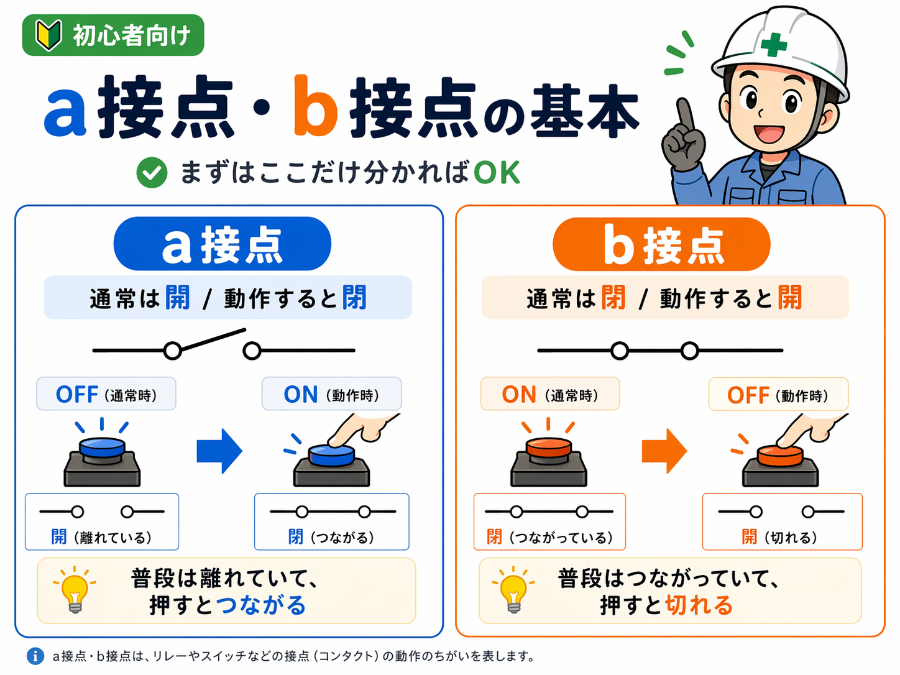
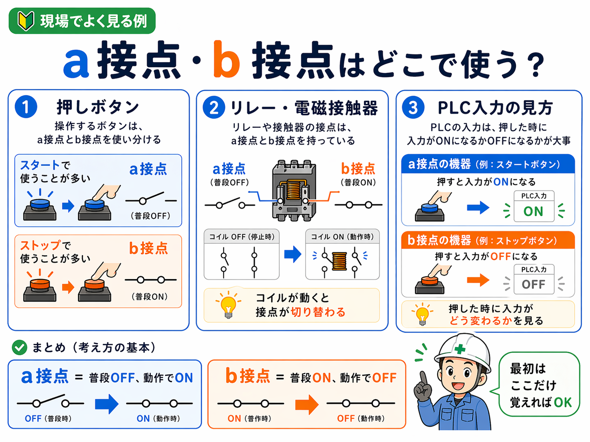

a接点・b接点とは？
a接点・b接点は、接点の動き方の違いを表す言い方です。接点というのは、リレー・電磁接触器・押しボタン・スイッチなどの中で、電気がつながる / 切れる部分のことです。
つまり、a接点・b接点を理解する時は「何の機器か」より先に、その接点が通常時に開いているのか、閉じているのかを見ると分かりやすくなります。

まずは基本の意味
a接点
通常時は開です。押したり動作したりすると閉になります。
- 普段は電気が流れない
- 動作した時に電気が流れる
- 「普段OFF → 動作でON」と覚えると分かりやすい
b接点
通常時は閉です。押したり動作したりすると開になります。
- 普段は電気が流れている
- 動作した時に電気が切れる
- 「普段ON → 動作でOFF」と覚えると分かりやすい
ここでの「通常時」とは？
ここでいう通常時は、ボタンを押していない・コイルが動作していない・何も操作していない状態のことです。この基準を先に決めておくと、a接点・b接点はかなり整理しやすくなります。
現場でよくある使い方
現場では、a接点・b接点は押しボタン、リレー・電磁接触器、PLC入力の見方などでよく出てきます。まずは代表的な使いどころをつかむと、名前だけよりずっと理解しやすくなります。

1. 押しボタン
押しボタンは、a接点・b接点を覚えるのに一番分かりやすいです。よくある例では、スタートボタンはa接点、ストップボタンはb接点という形があります。
スタートは押した時に信号を入れたいのでa接点が使いやすく、ストップは普段つながっていて押したら切る考え方になるのでb接点で組まれることがあります。
2. リレー・電磁接触器
リレーや電磁接触器では、1つの機器の中に a接点 と b接点 の両方を持っていることがあります。コイルがOFFの時は a接点が開、b接点が閉。コイルがONになると、a接点が閉、b接点が開に切り替わります。
ここを理解しておくと、自己保持回路やインターロック回路、補助接点の読み方がかなり追いやすくなります。
3. PLC入力の見方
現場で大事なのは、名前よりも押した時にPLCの入力がどう変わるかを見ることです。例えば、GX Works3で入力モニタを見る時に「押したらX0がONになる」「押したらX1がOFFになる」というふうに見ると整理しやすくなります。
PLC入力ではどう見る？
PLCで確認する時は、接点の名前だけを追うよりも、普段の状態 → 操作した時の変化 → 回路と合っているかの3つをセットで見るのが基本です。
a接点っぽい見方
- 普段は入力OFF
- 押す / 動作する と入力ON
- 例：スタートボタン、信号を入れたい入力
b接点っぽい見方
- 普段は入力ON
- 押す / 動作する と入力OFF
- 例：停止系、監視系で使うことがある
NO / NCとの関係
a接点・b接点と合わせて、NO / NC もよく出てきます。大まかには、
- a接点 ≒ NO（Normally Open）
- b接点 ≒ NC（Normally Closed）
で考えて大きくは問題ありません。ただし最初は、a接点 = 通常開 → 動作閉、b接点 = 通常閉 → 動作開 の整理だけで十分です。
よくある混乱
- a接点は普段ONではない → 普段は開で、動作した時に閉
- b接点は変な接点ではない → 停止や異常検出で重要
- 名前だけで暗記しない → 押した時に何が変わるかで見る
まとめ
a接点・b接点は、制御を読み始める時のかなり大事な基本です。まずは難しく考えすぎず、次の2つで押さえるのがおすすめです。
a接点
普段OFF、動作でON
b接点
普段ON、動作でOFF
現場では、名称だけでなく押した時に何が変わるかを見ていくと、PLC入力もラダーもかなり追いやすくなります。
次に読むとつながりやすい記事
a接点・b接点の次は、NO / NC の違いに進むとかなり整理しやすくなります。すでにある記事なら、入力と出力、自己保持回路、リミットスイッチも相性が良いです。